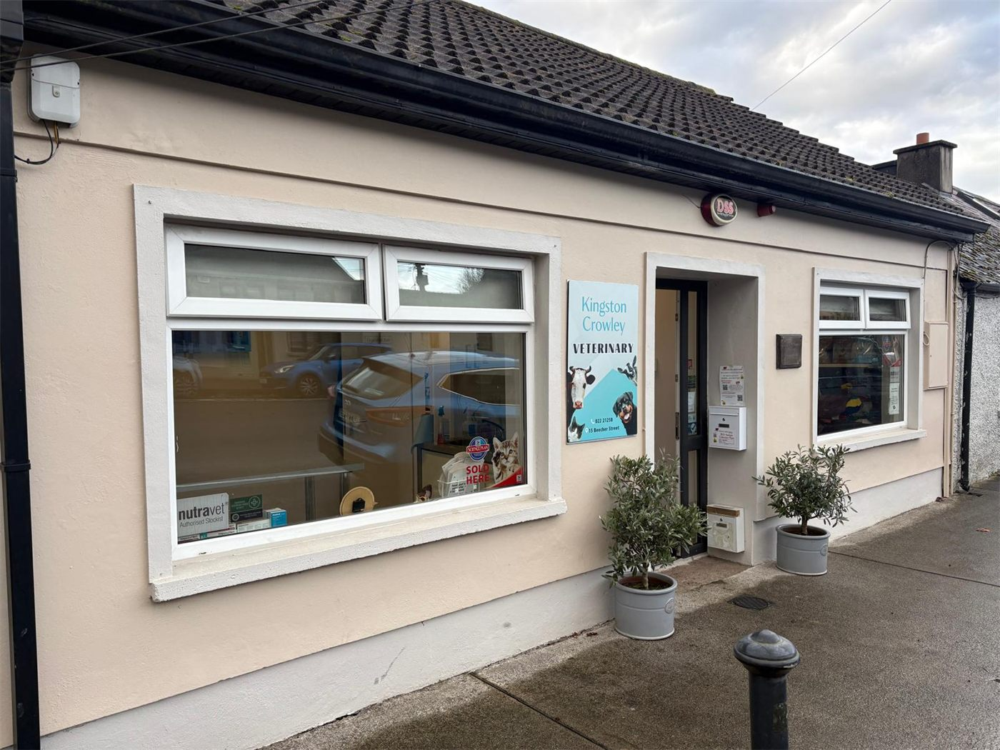

Companion animals
Gentle, thorough care for dogs, cats and other pets at every stage of life.
- Consultations & health checks
- Vaccinations
- Surgery & post-op care
Caring for family pets & farm animals in Mallow for over 35 years

Kingston Crowley Veterinary is a veterinary clinic on Beecher Street in Mallow, Co. Cork. We look after dogs, cats, other pets and farm animals, with a 24/7 emergency vet service for Mallow and North Cork.
Our team of vets and a veterinary nurse combines decades of veterinary experience with genuine compassion. We aim to give every patient fast, gentle care, explain treatment options clearly, and support families and farmers through stressful moments.
From routine vaccinations and herd health to medicines, diets and late-night emergencies, our vets and nurses are here for pets, farmers and their animals.
Gentle, thorough care for dogs, cats and other pets at every stage of life.
Practical, preventative farm animal medicine to keep your herd healthy and productive.
Medicines, diets and pet food under one roof.
Accidents and sudden illness don't keep office hours, so we provide 24/7 emergency cover.
*Subject to veterinary approval and stock.
Vets, nurses and support staff who combine expertise with empathy, and who know Mallow and its animals well.
“Got an appointment the same day I rang, all the staff were lovely and so helpful. Thank you.”
“A brilliant practice! Very kind and caring staff. They take excellent care of my elderly cat who has recurring ear/vestibular problems.”
“Ger saw my cat after hours on a Sunday evening. Super vet to deal with and brilliant treatment for my cat who had been bitten by a dog. Thanks Ger.”
We're at 15 Beecher Street, just off Main Street in Mallow town centre, easy to reach by car or on foot from Mallow and the surrounding North Cork area.
| Monday – Friday | 9am – 6pm |
|---|---|
| Saturday | 9am – 1pm |
| Out of hours | 24/7 for emergencies only |
All appointments are booked by phone, so give us a call and we'll find a time that suits.